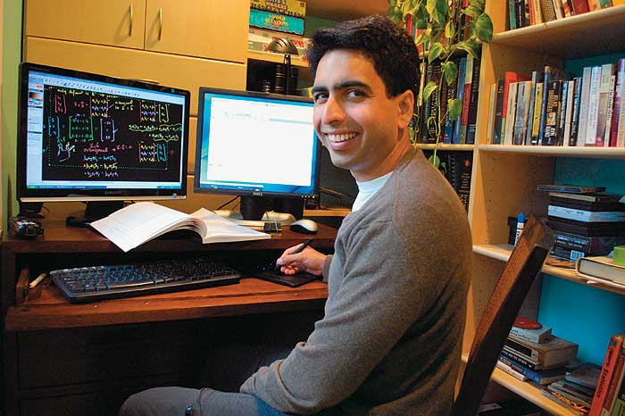
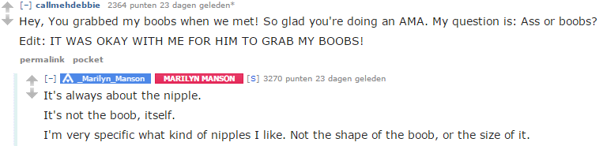
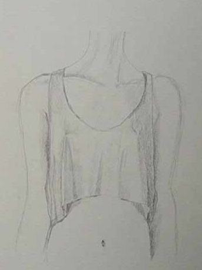
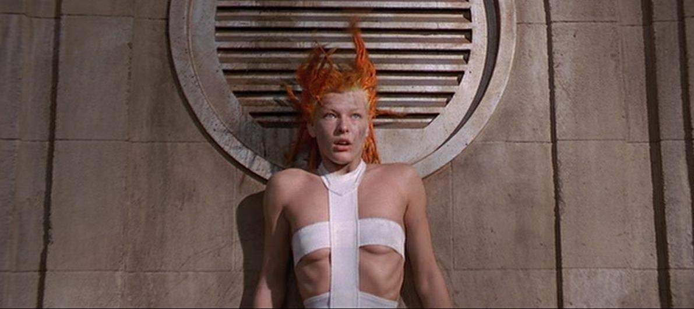
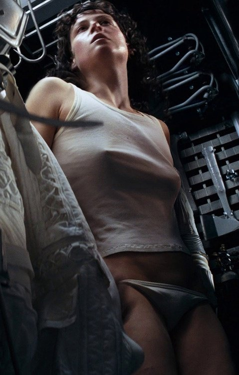
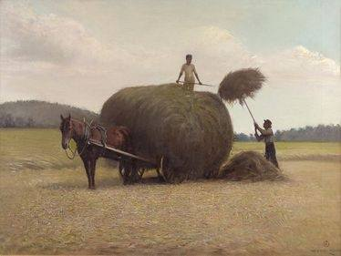

Some of my popular answers (2013 – 2016), before deleting my account.
Salman Khan. In 1998 at MIT, Sal achieved three BSc degrees in mathematics, electrical engineering, and computer science whereafter he completed two MSc degrees in electrical engineering and computer science. He also holds an MBA from Harvard. He left his job as a hedge fund analyst after discovering educating millions of people—through his paragon teaching style—was in the realm of possibilities.
I believe the smartest people who roam the universe are simultaneously the most unpretentious because through hindsight they realise it is not inherent intelligence, but persistent passionate diligence, curiosity, and a willingness to grow that's key. They also took notice that the environment where kids grow up, which makes or breaks curiosity, is entirely up to chance; and an unfavourable one at that.
That being said, Sal chose sharing wisdom over utilizing it for lucrative intentions. And judging from his various degrees, the latter possibilities could've been endless. To this day Khan Academy has offered a helping hand to over 40 million people worldwide, for free!
His genuinely compassionate and charismatic approach has impacted and will continue to impact millions of lives. Team Khan Academy is closing the illusionary gap between the layman and the wonderful Shangri-La that is science. Ultimately leveling up our humanity. Sapere aude!
PS Obviously John von Neumann and Leonhard Euler were among the true geniuses, but I felt this message was important enough because too much human potential is wasted by a predominantly archaic education system.
♔
All of life's experiences are shaped by our mind. Philosophy seeks to answer what is a good life; a healthy mind. Therefore, mastery of numbers and equations is in vain if the physicist does not know how to live. Does he live for the sake of progress and productivity? Or does he live for the sake of curiosity. Is he just living? Or does he feel alive. When philosophy dies, humanity dies with it.
♔
Don't be fooled by the media and advertisements; small breasts are equally attractive. Many men think they prefer a large bust when in fact the nipples are doing the work.
Source: Marilyn Manson 'Ass or boobs?' answer on Reddit.
It would be wonderful if women removed their bra instead of undergoing plastic surgery. It's cheaper and more attractive beyond comparison. For example, the sketch below I drew in school for a game character assignment—I aptly named her “Pax Perky”. To me, there is nothing sexier than a nipple poking through fabric. It's natural without being euphemized pornography.
I despise the media for mostly using female characters with huge breasts. Of course I'm attracted to them, but it sends the wrong message: as if they are the be-all and end-all. They aren't, and here's why:
Milla Jovovich in The Fifth Element:
Sigourney Weaver in Alien:
♔
Many years ago, on a hot summer's day, some farmers were working on their field in front of our home. Under a scorching sun, hoisting straw bales upon their wagon seemed like hard work. As I had no job or responsibilities I went back inside.
After finding the next best ragged old shoes, equipped with the appropriate shabby clothing, I strolled onto the field towards them. “Hello. Could I help?” I asked, already sweating from lifting my feet over the bristly straw. The adult in command on top of the bales gently said: “There is no money involved.” I swiftly replied: “No need, I enjoy arduous physical labour.” They gave me a pitchfork and we proceeded draining our strength.
After a couple of hours all the bales were collected. My hands had some torn blisters which felt painful but strangely satisfying. As we leaned on the wagon the adult passed me a soda. It was the most refreshing soda I ever drank.
This now intensely nostalgic gratifying summer afternoon taught me some of the best lessons in life, which I could not see back then.
“Work consists of whatever a body is obliged to do. Play consists of whatever a body is not obliged to do.” ―Mark Twain, The Adventures of Tom Sawyer
“Happiness only real when shared.” ―Christopher McCandless
“One of the first conditions of happiness is that the link between Man and Nature shall not be broken.” –Leo Tolstoy
♔
I was whispering to a classmate next to me in science class while the teacher was talking. She said: “If it's that interesting, why don't you share it with the entire class?” And so I did. I made up a story on the spot and started talking so everyone could hear. The whole class started laughing, teacher included. Made my day.